腾讯文档
腾讯文档是支持多人实时协作的云端办公文档工具，覆盖文档、表格、幻灯片、收集表等多种品类。WorkBuddy 与腾讯文档深度集成，搜索、预览、引用、回写一站完成，无需切换应用。
连接
- 在左侧边栏点击资料库，选择腾讯文档。
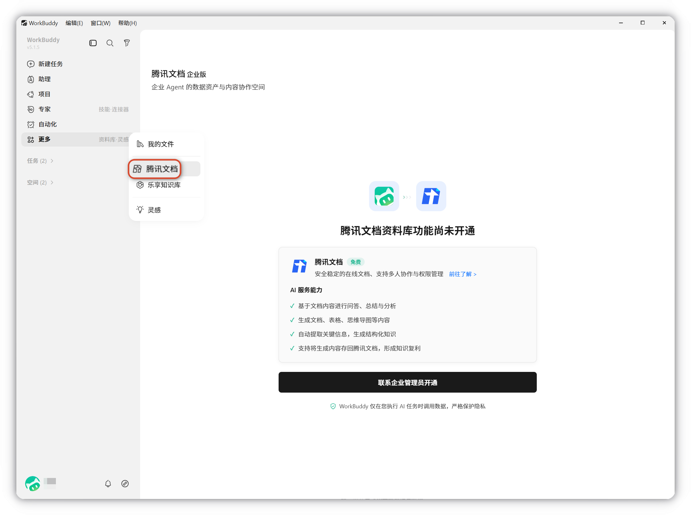
- 点击立即前往授权后 WorkBuddy 将能读取您的文档内容，为您提供总结提炼、智能问答，以及自动化文档创作与管理。
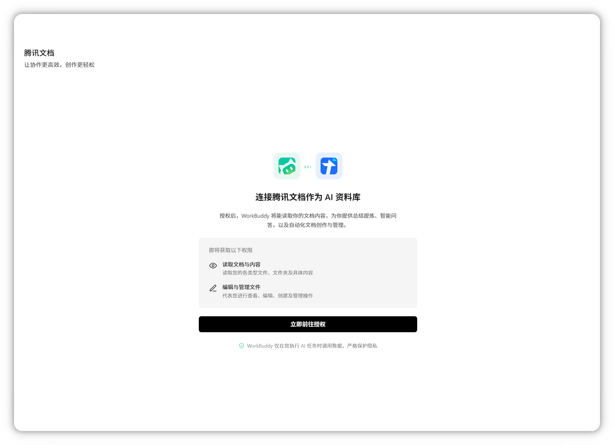
权限详情
- 读取文档内容：读取您的各类型文件、文件夹及具体内容
- 编辑与管理文件：代表您进行查看、编辑、创建及管理操作
- 微信/QQ 扫码登录：支持微信/QQ 扫码登录对应文档账户。
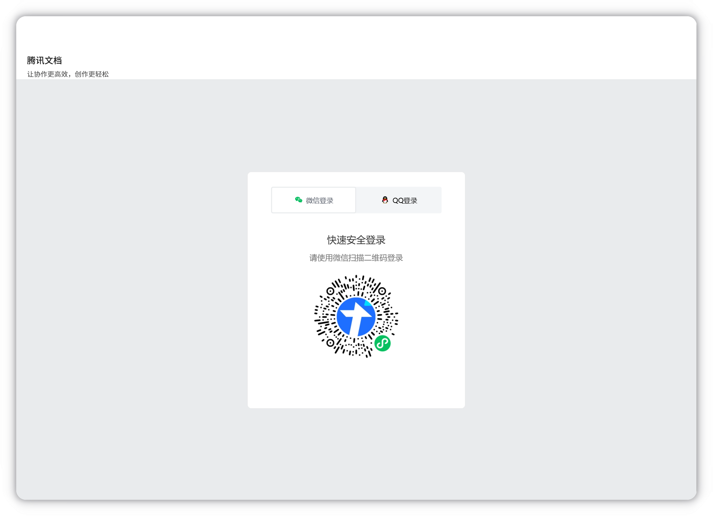
其他授权信息如下图，同意后即可使用：
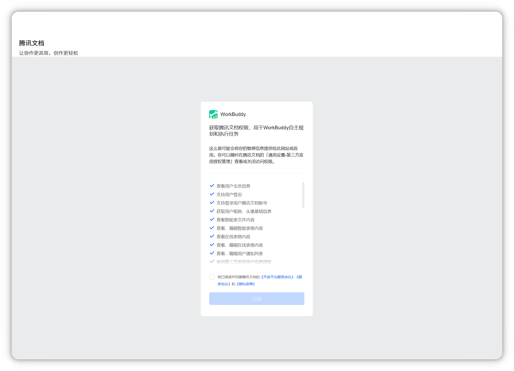
TIP
WorkBuddy 连接资料库的腾讯文档后将获得登录用户的腾讯文档的权限，详细授权信息见上方内容。
使用
搜索文件
- 语义搜索
新建任务，用自然语言描述需要的文档即可找到：
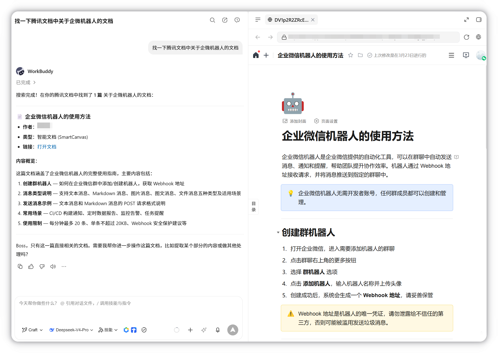
- 关键词搜索
打开资料库，在右上方搜索框输入关键词，回车后即可搜索到对应文件：
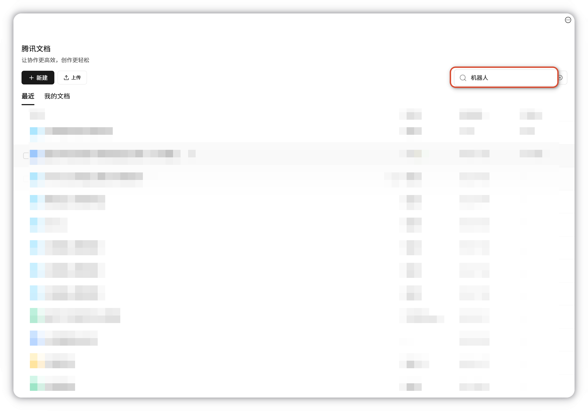
资料库支持搜索文档标题和搜索文档所有者的两种检索方式：
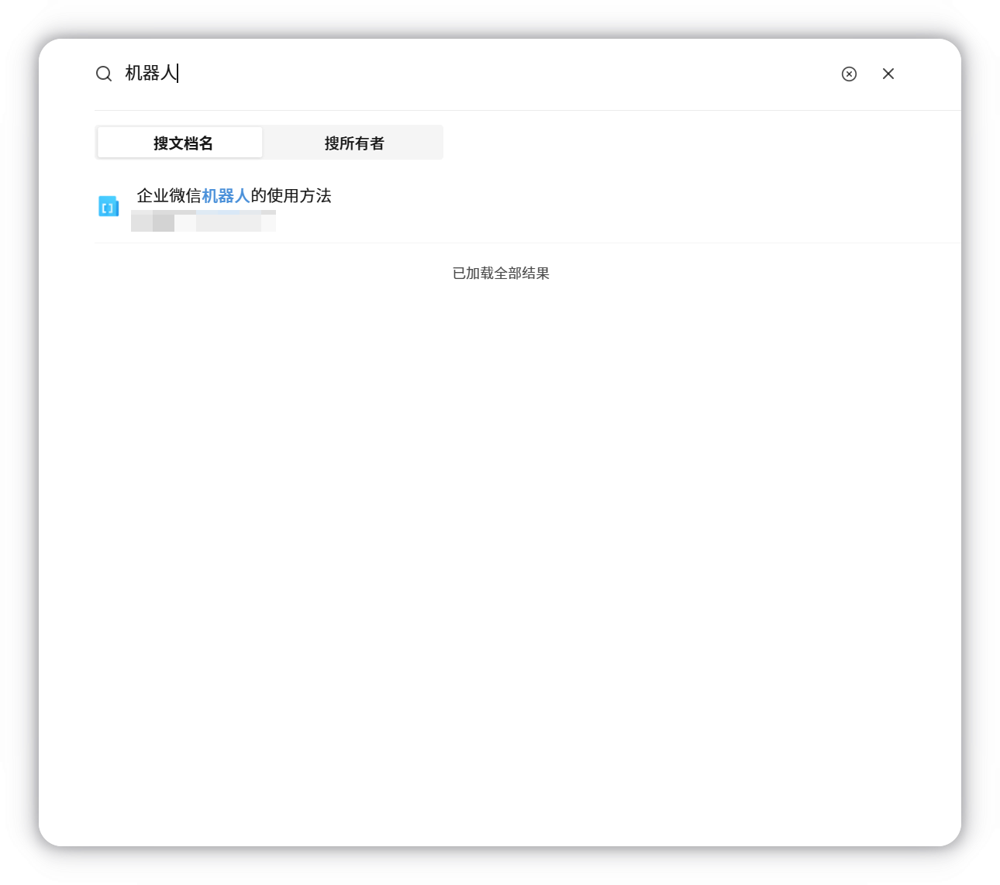
任务引用指定文件
在资料库中选中对应文件，点击添加到任务；或鼠标悬停对应文件点击添加到任务图标：
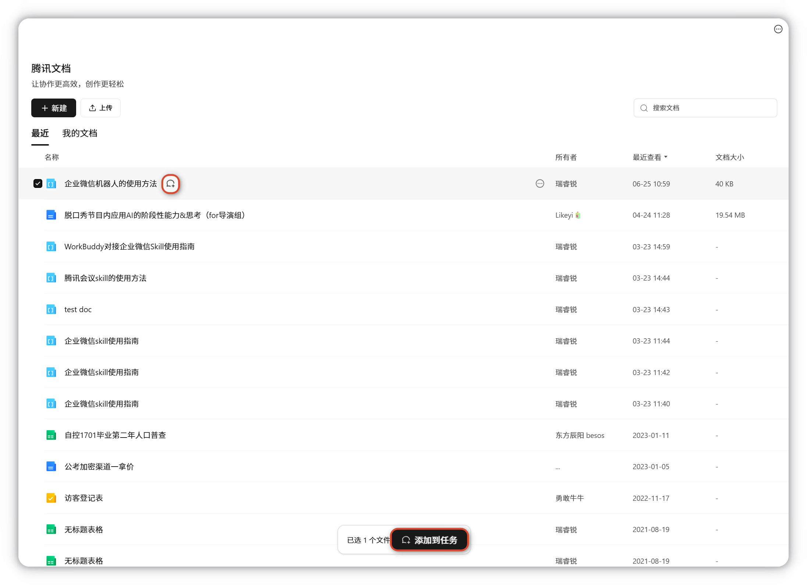
TIP
不仅支持选择在线文档，腾讯文档可以直接打开的 Word、Excel、PPT、PDF 等本地文件也可以在资料库中勾选，并添加到任务。
在输入框中描述任务操作：
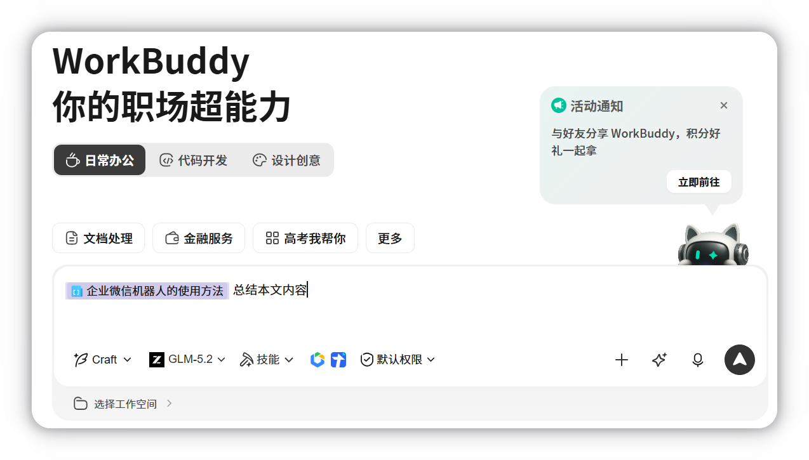
产物存回腾讯文档
在右侧产物中找到需要的文件，点击上传到云端，选择腾讯文档储存：

解除绑定
如果需要换绑账号或关闭连接，可以点击腾讯文档，在右上角点击解除绑定。
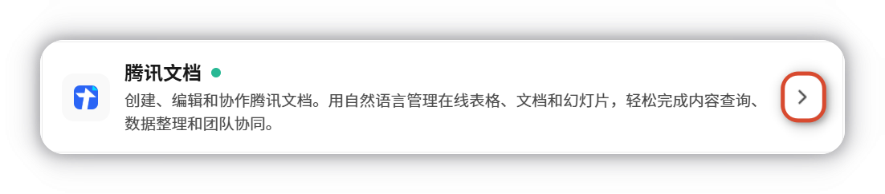
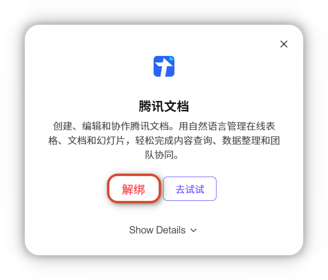